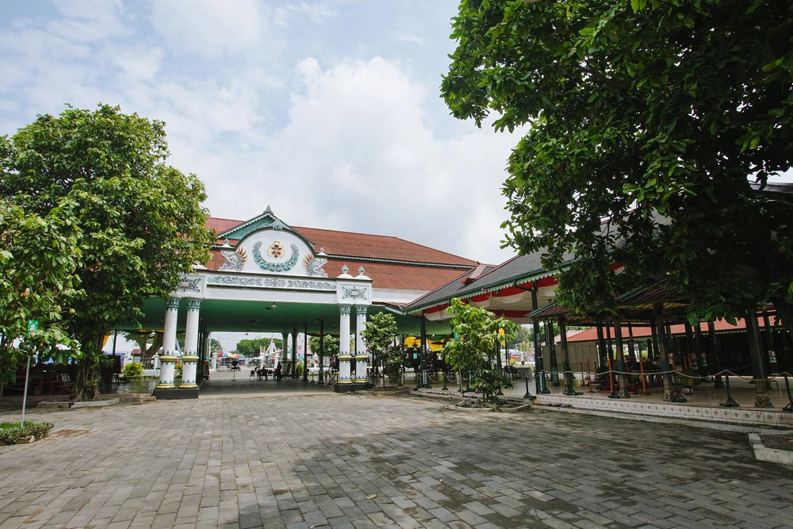

- Candi Prambanan
- Jalan Malioboro
- Kraton Yogyakarta 
- Pantai Parangtritis
- Lereng Gunung Merapi
Candi Prambanan adalah candi Hindu terbesar di Indonesia, dan terletak di Klaten, tepatnya perbatasan antara Jogja dengan Jawa Tengah. Candi ini menjadi salah satu tempat wisata di Jogja yang paling populer.
Candi Prambanan dibangun sekitar tahun 850 Masehi, oleh Raja Rakai Pikatan dari Kerajaan Mataram Kuno. Sebagian area candi berhasil dipugar setelah runtuh karena ditelantarkan dan berbagai bencana alam, namun sebagian lainnya tidak bisa dibangun kembali dan akhirnya dikumpulkan berserakan di sekitar kompleks candi. Diperkirakan, dulunya ada sampai 240 candi di area Candi Prambanan, meski kini hanya tersisa 18 candi saja.

Jelas saja tempat wisata di Jogja yang satu ini wajib ada di nomor 1. Kamu betul-betul belum ke Jogja namanya kalau enggak mampir atau paling enggak lewat Jalan Malioboro!
Selain untuk beli oleh-oleh, kamu juga bisa makan-makan di area Malioboro. Apalagi kalau malam, banyak banget warung tenda berdiri di sini. Kalau kamu liburan ke Jogja dengan kereta, kamu bisa langsung berjalan kaki dari Stasiun Tugu Yogyakarta ke Jalan Malioboro karena lokasinya berseberangan.
Jogja adalah sebuah Daerah Istimewa, yang dipimpin oleh seorang raja yaitu Sultan Hamengkubuwono X. Seorang raja tentu saja butuh istana, dan Kraton Yogyakarta adalah istananya. Sejarah panjang Kesultanan Yogyakarta pun bisa kamu lihat langsung di sini.
Kamu bisa mengunjungi Kompleks Utama Kraton Yogyakarta yang dibuka untuk umum pada pukul 08.30 - 13.00 WIB, kecuali Jumat hanya sampai 11.00 WIB. Ada pemandu yang bisa menemanimu menjelajahi area Kraton. Tetapi kalau kamu ingin berjalan-jalan sendiri pun tak masalah.
Harga tiket masuk Kraton Yogyakarta sangat murah, hanya Rp 5.000 untuk wisatawan domestik dan tambahan Rp 1.000 untuk izin berfoto.
Meski Pantai Parangtritis memang sangat "turis banget", tapi bagi kamu yang pertama kali ke Jogja, pantai ini tetap wajib kamu kunjungi. Dengan garis pantai yang cukup panjang dan area pasir pantai yang sangat luas, ada banyak hal yang bisa kamu nikmati di Parangtritis, baik itu berburu foto keren di gundukan pasir, mengendarai ATV atau malah delman, bermain pasir, atau sekadar duduk-duduk menikmati angin laut.
Pantai Parangtritis juga merupakan salah satu pantai terbaik untuk menikmati sunset, jadi usahakan datang menjelang sore hari untuk mendapatkan pemandangan terbaik di sini!
Ada dua pilihan yang bisa kamu pilih untuk mengunjungi Gunung Merapi: mendakinya ataupun mengikuti tour dengan mobil jeep ke area Kaliadem di lereng Gunung Merapi. Jika mendaki menjadi pilihanmu, kamu tentu harus memiliki persiapan ekstra karena mendaki Gunung Merapi tidaklah mudah. Namun jika tour dengan jeep, kamu bisa melakukannya kapan saja.
Kamu bisa memesan private jeep tour ke kaliadem di Gunung Merapi melalui Klook, di mana kamu bisa memilih berapa jumlah rombongan yang akan mengikuti tour ini. Kamu bisa melihat langsung Bunker Kaliadem, bekas-bekas letusan Gunung Merapi beberapa tahun lalu, dan tentu saja, kegagahan gunung ini dari dekat!